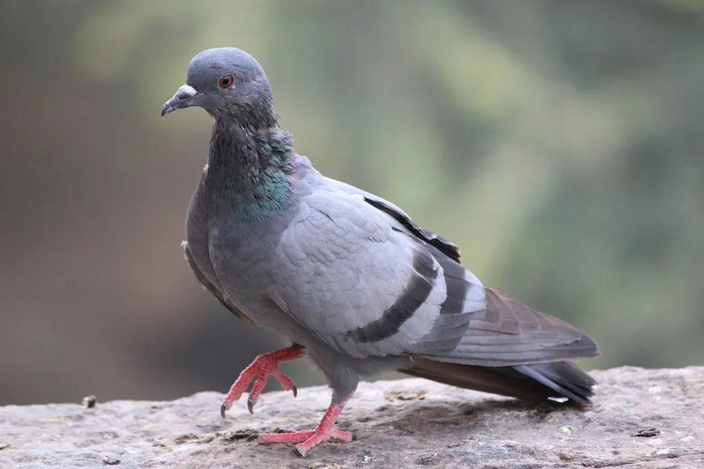
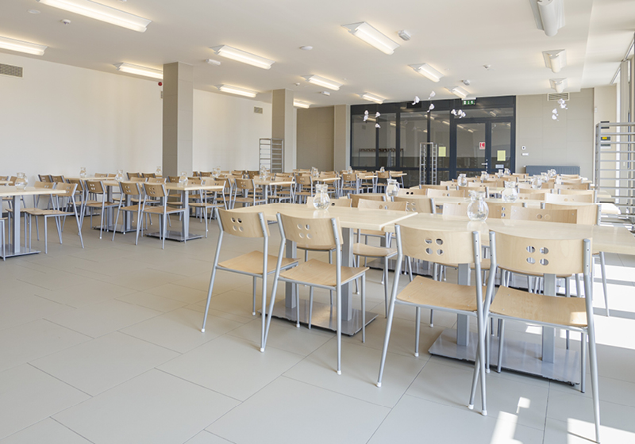

HÖRCSÖG a nagytesiben!🐹
Méghogy megszökött, egy csoport diák direkt kiengedte az egyik hörcsögöt az E-sek ketrecéből!😲
Az indítékra még nem derült fény, de azt csiripelik a madarak, hogy az ingafutás elmaradásának céljából tették.
Botrány a SAKKVERSENYen!♟️
Az évente megrendezett kerületi sakkverseny idei fordulóján az összes sakkóra egyszerre elromlott!🕰️
Még azóta sem sikerült kideríteni a problémát, de sokan az infósokat gyanusítják hackeléssel.
GALAMB az infóteremben!🕊️
Az elképesztő hőség a tetőtéren az ablakok kinyitását eredményezte, ami viszont egy váratlan látogatóhoz vezetett!🤯
A kompetenciamérések közben vette észre az egyik diák a madarat, de szerencsére 5 perc elteltével távozott is.

SZELLEM a padláson!👻
A legújabb hiedelem szerint egy szellem szállta meg a médiás padlást, mert több médiás is panaszkodott, hogy lépteket hallott forgatások közben a tetőről!😱
Sokan elhiszik, hogy tényleg egy kísértet a hangok forrása.
KAJACSATA az ebédlőben!🍲
A sulis focibajnokság után úgy összeveszett két osztály, hogy az egymás iránt érzett dühüket a menzán engedték szabadra!🥷
A kaja pazarlása felett még elképesztő ricsajt is okoztak az osztályok, amiért végül takarítással büntették őket.

Suli BULI!🪅
A július 3-ai évzáró után az NyF osztály egy hatalmas bulit szervez az Óhegy parkban az év befejezésének megünneplésére, ahol mindenkit szívesen látnak!🥳
További információ az szlg.nyf oldalon.